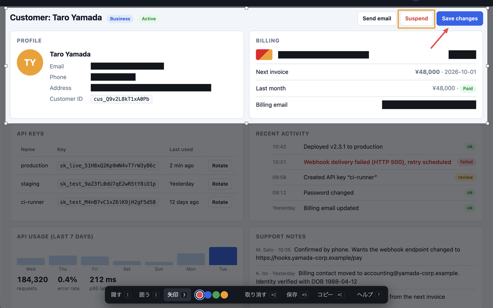
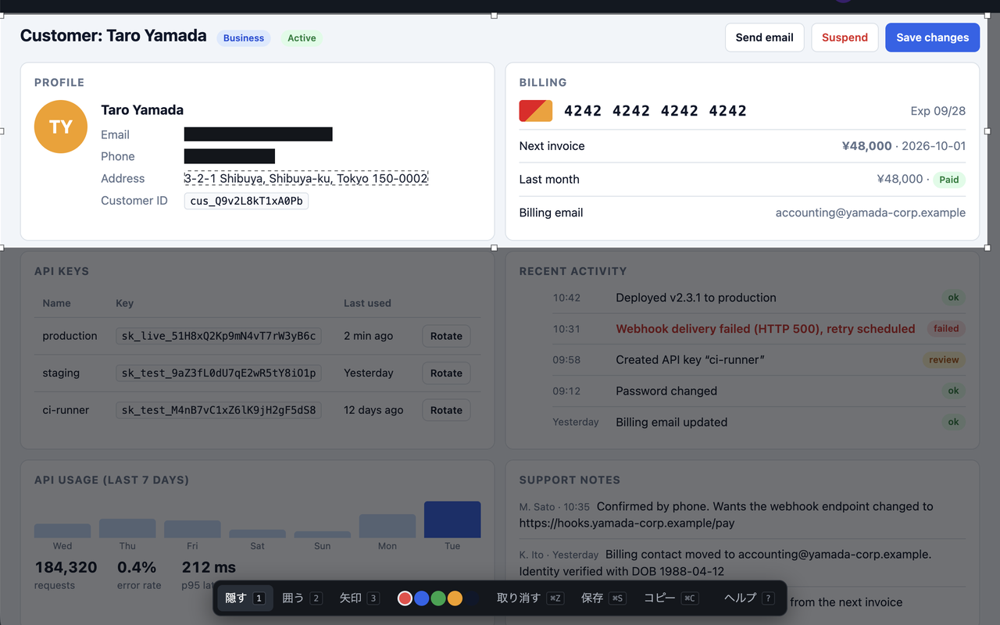
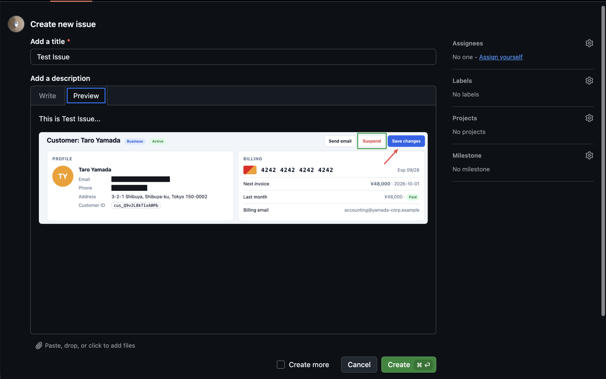

Select an area, hide it, box it, point at it, then straight to the clipboard.
A Chrome extension. No install warnings, and nothing leaves your machine.

Only activeTab, scripting and contextMenus. None of them shows a warning.
No server, no analytics, no cloud, no external fonts. The capture is processed inside the page.
No mode picker, no editor tab. Select, mark, copy.
Hide paints a solid, opaque block. No blur, no mosaic.

